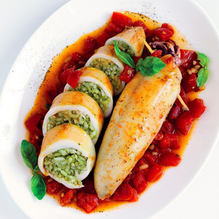

Entradas
1. Bruschetta Clássica
Uma entrada refrescante e saborosa, feita com pão crocante tostado, coberto por uma mistura simples de tomate fresco, alho, manjericão, azeite e um toque de sal e pimenta. É uma opção leve e muito tradicional na gastronomia italiana como antipasto
2. Olive all’Ascolana
Uma iguaria da região de Marche composta por azeitonas verdes recheadas com um mix suculento de carnes (como veado, porco ou frango), temperadas, empanadas e fritas até ficarem douradas e crocantes. É uma entrada quente e sofisticada, com sabor marcante
Pratos Principais
1. Bistecca alla Fiorentina
Um ícone da Toscana — este corte de carne bovina (frequentemente de vitela ou novilha da raça Chianina) é preparado em espessura generosa, com osso, e grelhado até atingir o ponto ideal, geralmente malpassado ou ao ponto. A simplicidade e qualidade da carne tornam este prato uma experiência intensa e autêntica.
2. Cotoletta alla Bolognese
Especialidade de Bolonha, consiste em uma costeleta de vitela empanada, frita em manteiga ou banha, coberta com presunto e queijo parmesão, e finalizada no forno com um toque de caldo de carne. Um prato rico, saboroso e cheio de tradição.
Galeria
